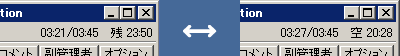
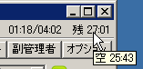

一定以上古いファイルはここからはダウンロードできません。もし必要であれば直接私までご連絡を。
| [2010.04.08] v1.41.1 | NicoReqMikunopopEdition_1411.exe |
| zip アーカイブ |
・メンテナンスリリースです。機能の追加や修正はありません。
・細かい情報（P名リスト、ジングルリスト、タグリスト）を更新しました。(thx!> koke)
| [2010.03.27] v1.41 | NicoReqMikunopopEdition_141.exe |
| zip アーカイブ |
・ニコニコ側の変更によりパート番号が正しく取得できない問題に対応しました。
| [2010.03.25] v1.40 | NicoReqMikunopopEdition_140.exe |
| zip アーカイブ |
・API 変更（トークン付きコメント）に対応しました。(thx!> w2k)
・細かい情報（P名リスト）を更新しました。(thx!> kawa)
| [2010.03.20] v1.39 | NicoReqMikunopopEdition_139.exe |
| zip アーカイブ |
・リクエストメニューに「直前の再生コマンドを再発行する」メニューを追加しました。
サーバにコマンドが飛んでいないときに使用すると便利です。
・すでにストックにある曲を主セレで追加した時にリスナーからのリクエストとして
認識されてしまう問題を修正しました。
・動画情報タブに、ニコニコとまとめサイトへのリンクを表示するようになりました。
・まとめサイトへのリンクを「？」メニューに追加しました。
・細かい情報（P名リスト、ジングルリスト、タグリスト）を更新しました。
・その他細かい点を調整しました。
| [2010.03.05] v1.38 | NicoReqMikunopopEdition_138.exe |
| NicoReqMikunopopEdition_138.zip |
・すでにストックにある曲がリクエストされた時に、主セレのままにするか
リスナーからのリクエストとして扱うかを選択できるようになりました。
・リクエストタブのリクエストマーク（花アイコン）を右クリックすると
アイコンが消えると同時に、主セレ扱いに戻すよう変更しました。
・細かい情報（タグリスト）を更新しました。
・その他細かい点を調整しました。
| [2010.02.22] v1.37 | NicoReqMikunopopEdition_137.exe |
| NicoReqMikunopopEdition_137.zip |
・放送主のコメント中に動画番号があった場合にリクエストとして扱ってしまう問題を修正しました。
なお、/play smXXXXXXX などのコマンド類はこれまで通り有効です。(thx!> w2k)
・新着制限（７日）をチェックする設定のデフォルト値をオフに変更しました。
・情報を表示する欄を暫定的に設けました。
・細かい情報（P名リスト、タグリスト）を更新しました。
・その他細かい点を調整しました。
| [2010.01.23] v1.36.1 | NicoReqMikunopopEdition_1361.exe |
| NicoReqMikunopopEdition_1361.zip |
・メンテナンスリリースです。
・細かい情報（P名リスト、ジングルリスト、タグリスト）を更新しました。
| [2010.01.16] v1.36 | NicoReqMikunopopEdition_136.exe |
| NicoReqMikunopopEdition_136.zip |
・リクエストしたひと（主セレ/コメント番号）の情報が表示されるようになりました。(thx!> Mint=Rabbit)
それに伴い、動画情報の表示内容が少し変更されています。
・細かい情報（P名リスト、ジングルリスト、タグリスト）を更新しました。
・その他細かい点を調整しました。
| [2010.01.07] v1.35 | NicoReqMikunopopEdition_135.exe |
| NicoReqMikunopopEdition_135.zip |
・メンテナンスリリースです。
・枠延長をした後に再接続すると残り時間表示がおかしくなる問題を修正しました。
・P名リストを大幅に更新しました。(thx!> kotac)
（上級者向け：今回から内部的にプログラムで半自動生成します。名前をソートするようにしました）
・細かい情報（タグリスト）を更新しました。
・その他細かい点を調整しました。
| [2009.12.08] v1.34 | NicoReqMikunopopEdition_134.exe |
| NicoReqMikunopopEdition_134.zip |
・動画情報を、常時（曲が流れている間）表示する機能を追加しました。
デフォルトではオフになっています。settings.js の２３０行目付近に
例示していますので、コメントを外してみてください。
途中から放送に参加した場合は情報は表示されません。
主コメは上部の情報欄には表示されなくなります。
解除するには、主コメント欄に /clear と入力して発言します。
・マイリスト追加時における不具合を修正しました。(thx!> Mint=Rabbit)
| [2009.12.04] v1.33 | NicoReqMikunopopEdition_133.exe |
| NicoReqMikunopopEdition_133.zip |
・１人あたりのリクエスト数を制限できるようになりました。
デフォルトでは、起動時にはこの機能はオフになっています。「オプション」
タブ内にある設定で有効にできるほか（放送中にリアルタイムに変更可能）
settings.js 内でデフォルト値をセットできます。
機能がオフの時でも裏でカウントはされています。
あるリスナーがリクエストした回数は枠ごとにリセットされます。
ツールを終了するとリクエスト回数情報は失われます。
・細かい情報（P名リスト）を更新しました。
| [2009.12.04] v1.32 | NicoReqMikunopopEdition_132.exe |
| NicoReqMikunopopEdition_132.zip |
・（不具合のため廃版、破棄願います）
| [2009.11.28] v1.31 | NicoReqMikunopopEdition_131.exe |
| NicoReqMikunopopEdition_131.zip |
・右上の残り時間をクリックして空き時間表示に切り替えられるようにしました。
もう一度クリックすると残り時間表示に戻ります。
・細かい情報（P名リスト）を更新しました。

| [2009.11.18] v1.30.1 | NicoReqMikunopopEdition_1301.exe |
| NicoReqMikunopopEdition_1301.zip |
・メンテナンスリリースです。
・細かい情報（P名リスト、ジングルリスト、タグリスト）を更新しました。
・その他細かい点を調整しました。
| [2009.11.10] v1.30 | NicoReqMikunopopEdition_130.exe |
| NicoReqMikunopopEdition_130.zip |
・残りの再生マージン（今流している曲が終わった時点での残り時間）を
右上の残り時間のツールチップに表示するようにしました。例：「空 08:23」
これにより、あと何曲流すかの計算がしやすくなります。
（また、最後の曲では何秒足が出るかもわかります。例：「空 -01:07」）
・「接続」メニューに、「残り時間カウントを１枠延長する」メニューを
追加しました。オリジナルのニコリクにある「１枠延長」と同じものです。
・「コメント」タブと「動画情報」タブの位置を入れ替えました。
・その他細かい情報（P名リスト）を更新しました。

| [2009.11.01] v1.29 | NicoReqMikunopopEdition_129.exe |
| NicoReqMikunopopEdition_129.zip |
・ニコニコの仕様変更に伴い、プレイ中の動画が登録されているマイリストを表示する機能と、
プレイ中の動画をマイリストへ追加する機能が正しく動作しなかった問題に対応しました。
・副管理者タブの配置などを整理しました。
・動画情報タブに動画のタグを表示するようにしました。
・その他細かい点を調整しました。
| [2009.10.30] v1.28 | NicoReqMikunopopEdition_128.exe |
| NicoReqMikunopopEdition_128.zip |
・ニコニコの仕様変更に伴い「マイリストから検索」機能が動作しなかった問題に対応しました。
・余分なミクノ度ファイルが生成される問題を修正しました。
また、ミクノ度ファイルの場所を変更しました。
・その他細かい情報（P名リスト）を更新しました。
・その他細かい点を調整しました。
| [2009.10.28] v1.27 | NicoReqMikunopopEdition_127.exe |
| NicoReqMikunopopEdition_127.zip |
・コメントタブの表示を整理しました。
コメントに含まれるタグを除去して見やすくしました。
コメントに含まれる動画番号をクリックすると動画ページを開くようにしました。
コメントに動画番号が含まれている場合はサムネイル画像を表示するようにしました。
この機能は settings.js でオフにできます。
ID をクリックしたときの情報ポップアップ機能をオフにしました。
色や配置を見やすく変更しました。
・ストックが空のまま終了しても stock.txt を削除しないようにしました。
・ジングルリストのフォーマットを一部変更しました。
・残り時間が赤く表示される時間を１０分前から５分前に変更しました。
・その他細かい情報（P名リスト、タグリスト等）を更新しました。
| [2009.10.25] v1.26.3 | NicoReqMikunopopEdition_1263.exe |
| NicoReqMikunopopEdition_1263.zip |
・メンテナンスリリースです。細かい情報（ジングルリスト）を更新しました。
| [2009.10.25] v1.26.2 | NicoReqMikunopopEdition_1262.exe |
| NicoReqMikunopopEdition_1262.zip |
・メンテナンスリリースです。細かい情報（ジングルリスト）を更新しました。
| [2009.10.23] v1.26.1 | NicoReqMikunopopEdition_1261.exe |
| NicoReqMikunopopEdition_1261.zip |
・メンテナンスリリースです。細かい情報（ジングルリスト）を更新しました。
| [2009.10.22] v1.26 | NicoReqMikunopopEdition_126.exe |
| NicoReqMikunopopEdition_126.zip |
・マイリスト情報を取得する方法を最適化し起動速度を向上しました。
サーバ混雑時でもエラーが大幅に出にくくなるはずです（たぶん）。
・その他細かい情報（P名リスト等）を更新しました。
| [2009.10.15] v1.25 | NicoReqMikunopopEdition_125.exe |
| NicoReqMikunopopEdition_125.zip |
・テキスト編集エリアでもショートカットキーが効いてしまう問題を修正しました。(thx!> w2k)
・その他細かい情報（P名リスト）を更新しました。
| [2009.10.09] v1.24 | NicoReqMikunopopEdition_124.exe |
| NicoReqMikunopopEdition_124.zip |
・リスナーからリクエストがあった曲は、リクエストタブのそれぞれの曲名の上に星型アイコンが表示されるようになりました。
ただし、すでにストックにある曲がリクエストされた場合にはアイコンは表示されません。
（この仕様は将来変更される可能性があります）
また、現在のところ、ニコリクを閉じると情報は失われます。
アイコンを右クリックするとアイコンを消去できます。
・上記に関連して、すでにストックにある曲がリクエストされた場合にその旨のメッセージを表示するようにしました。
この動作は settings.js でオフにできます。
・「マイリストから検索」ウィンドウの表示を微修正しました。
・「マイリストから検索」でブラックリストにマッチした際に曲を正しく抽出できない問題を修正しました。
・その他細かい情報（P名リスト、タグリスト等）を更新しました。
| [2009.10.06] v1.23 | NicoReqMikunopopEdition_123.exe |
| NicoReqMikunopopEdition_123.zip |
・イベント動画情報をジングル一覧に追加しました。
・jingles.json のデータの持ち方を一部変更しました。
settings.js の settings["JingleComment"] から「No.」が除かれているので注意してください。
・ジングル情報の管理者コメントは /perm をつけて投稿するようにしました。
| [2009.10.04] v1.22 | NicoReqMikunopopEdition_122.exe |
| NicoReqMikunopopEdition_122.zip |
・接続時に、クリップボードにＵＲＬ等があれば自動で埋めるようになりました。
ＵＲＬコピー・Ｃキー・そのままエンターキーの３ステップで接続できます。
・動画サムネイルをクリックすると既定のブラウザで動画ページを開くようになりました。
・「再生履歴の出力」ウィンドウの表示を強化しました。
自動でパート番号を取得し表示するようになりました。
パート間に改行をはさむことにより読みやすくなりました。
内容をコピーするボタンをつけました。
以上によりテキストの編集作業が必要なくなり、Ｅキー・クリック・ペーストだけで
プレイリスト用テキストが準備できるようになりました。
・Ｄキーを「切断」に割り当てました。確認ダイアログが表示されます。
・その他細かい情報（P名リスト、タグリスト等）を更新しました。
・その他細かい点を調整しました。
[2009.09.26] v1.21 NicoReqMikunopopEdition_121.exe
[2009.09.26] v1.21 NicoReqMikunopopEdition_121.zip
・リクエストタブ上部にあるコントロール部分の位置を固定しました。
・ボタンにマウスを重ねたときにカーソルの形を変えるようにしました。
・マイリスト情報キャッシュ機能に関するパラメータを settings.js に追加しました。
・ソートから「マイリスト率順」を削除し「曲の長さ順」を追加しました。
・その他細かい点を調整しました。
[2009.09.24] v1.20.1 NicoReqMikunopopEdition_1201.exe
[2009.09.24] v1.20.1 NicoReqMikunopopEdition_1201.zip
・メンテナンスリリースです。細かい情報（P名リストとジングルリスト）を更新しました。
今後は、機能に関係ない情報の更新のみの場合は枝番を振りリリースします。
[2009.09.21] v1.20 NicoReqMikunopopEdition_120.exe
[2009.09.21] v1.20 NicoReqMikunopopEdition_120.zip
・リクエストタブでソートした際に、各動画のタイトルが消えてしまう問題を修正しました。
・動画情報をローカルにキャッシュするようになりました。
動画情報取得時に、手元の情報が２日以上古い場合のみサーバから再取得します。
ただし、一部保存できない場合もあります。この機能はオフにすることもできます。
・キーボードショートカットを試験的に導入しました。「？」メニューをどうぞ。
・マイリストグループの取得にブラックリスト機能を追加しました。
放送に関係ないマイリストグループ名をスキップして初回起動を高速化できます。
・JASコードファイルを読まないよう変更し、配布物から削除しました。
・その他細かい点を調整しました。
[2009.09.17] v1.19 NicoReqMikunopopEdition_119.exe
[2009.09.17] v1.19 NicoReqMikunopopEdition_119.zip
・マイリスト情報をローカルにキャッシュするようになり、起動が高速化されました。
ニコリク起動時に、手元の情報が２４時間以上古い場合のみサーバから再取得します。
・ジングルのサムネイル画像を一覧の左に小さく表示するようにしました。
・ジングルの情報を管理者コメントとしてポストするようになりました。
これに伴い、ジングルの情報は jingles.json へ分離されました。
・P名リストを大幅に更新しました。(thx!> kotac)
・その他細かい点を調整しました。
[2009.09.15] v1.18 NicoReqMikunopopEdition_118.exe
[2009.09.15] v1.18 NicoReqMikunopopEdition_118.zip
・「視聴履歴」に改行が正しく入らない問題を修正しました。
・その他細かい情報（P名リスト、タグリスト等）を更新しました。
[2009.09.15] v1.17 NicoReqMikunopopEdition_117.exe
[2009.09.15] v1.17 NicoReqMikunopopEdition_117.zip
・動画情報をコピーする機能を復活させました。番号 [ 1/3] の部分をクリックできます。
・サムネイル画像を右クリックすると動画番号をコピーするようになりました。
・リクエストタブの動画タイトルに全タグをツールチップ表示するようになりました。
[2009.09.14] v1.16 NicoReqMikunopopEdition_116.exe
[2009.09.14] v1.16 NicoReqMikunopopEdition_116.zip
・副管理者機能を追加しました。ただし、作者は未検証です。(thx!> w2k & higumon)
・リクエストタブの動画をミクノ度で並び替えできるようになりました。(thx!> w2k)
・動画を「マイリストから検索」できるようになりました。(thx!> w2k)
・P名リストを更新しました。(thx!> higumon)
・その他細かい情報を更新しました。
[2009.09.10] v1.15 NicoReqMikunopopEdition_115.exe
[2009.09.10] v1.15 NicoReqMikunopopEdition_115.zip
・新着動画の基準を、日数でなく厳密に１６８時間０分で判定するよう変更しました。
・その他細かい情報（P名リストとジングルリスト等）を更新しました。
[2009.09.03] v1.14 NicoReqMikunopopEdition_114.exe
[2009.09.03] v1.14 NicoReqMikunopopEdition_114.zip
・リクエストタブのデザインを変更しました。情報ボタンを無くし、長いタイトルも表示できるようになりました。
・その他細かい情報を更新しました。
[2009.09.01] v1.13 NicoReqMikunopopEdition_113.exe
[2009.09.01] v1.13 NicoReqMikunopopEdition_113.zip
・リクエストタブで動画番号をクリックして出る詳細情報の表示方法を変更しました。
・マイリスト率などの表示単位を小数点第一位までに変更しました。
・その他細かい情報を更新しました。
[2009.08.25] v1.12 NicoReqMikunopopEdition_112.exe
[2009.08.25] v1.12 NicoReqMikunopopEdition_112.zip
・メンテナンスリリースです。P名リストとジングルリスト等を更新しました。
[2009.08.08] v1.11 NicoReqMikunopopEdition_111.exe
[2009.08.08] v1.11 NicoReqMikunopopEdition_111.zip
・メンテナンスリリースです。P名リストとジングルリスト等を更新しました。
[2009.07.24] v1.10 NicoReqMikunopopEdition_110.exe
[2009.07.24] v1.10 NicoReqMikunopopEdition_110.zip
・ミクノ度の情報をローカルにキャッシュするようになりました。それにより、
曲ごとにサーバに問い合わせなくなったので負荷が減り高速化されました。
また、サーバが不安定・ダウンしていても放送ができるようになります。
ニコリク起動時に、手元の情報が６時間以上古い場合のみサーバから一括でミクノ度を取得します。
※差分は zip 中の a.patch をどうぞ。
・（1.07-1.09 はスキップされます）
[2009.07.15] v1.06 NicoReqMikunopopEdition_106.exe
[2009.07.15] v1.06 NicoReqMikunopopEdition_106.zip
・w2kさんによって報告されたコメントログにおける日付フォーマット置換バグを修正しました。
[2009.07.13] v1.05 NicoReqMikunopopEdition_105.exe
[2009.07.13] v1.05 NicoReqMikunopopEdition_105.zip
・ウィンドウ外観をさらにシンプルにしました。
・再生中の曲の時間表示タイプをデフォルトで「カウントダウン方式」に変更しました。従来通りの方式に設定することもできます。
[2009.07.05] v1.04 NicoReqMikunopopEdition_104.exe
[2009.07.05] v1.04 NicoReqMikunopopEdition_104.zip
・ジャンル（タグ）をリクエストタブに表示するようになりました。曲の内容を表すタグに限定している点が特徴です。
必要がなければ、settings.js の１２７行目あたりをオフにしてください。
・ジングル一覧なども適宜変更しています。
[2009.07.04] v1.03 NicoReqMikunopopEdition_103.exe
[2009.07.04] v1.03 NicoReqMikunopopEdition_103.zip
・w2kさんによって報告された脆弱性を暫定的に修正しています。
1.02以前をお使いの方はアップデートしてください。
see http://jbbs.livedoor.jp/bbs/read.cgi/internet/2353/1236050050/411
・P名のリストを別ファイル（pnames.js）へ分離しました。
随時追加していますので、情報をお待ちしています。
・情報コメントに色を付けました。もっといい配色なども募集しています。
・[実験的] リスナーからのリクエストを、リクエストリストの
末尾ではなく先頭（上）に追加するオプションを追加しました。
※適当な実装のため、非推奨の隠し機能扱いです。
[2009.06.27] v1.02 NicoReqMikunopopEdition_102.exe
・動画毎のサムネイルを取得する代わりに、ダミーのサムネイル画像を表示する機能を追加しました。
settings.jsの６０行目付近「サムネイル画像表示」の項を参照してください。
・ミクノ度をサーバに問い合わせないオプションを追加しました。
settings.jsの７２行目付近「ミクノ度」の項を参照してください。
・「ミ」は正式に「彡」に進化しました。( ﾟ∀ﾟ)o "彡" ﾟびにゅP！びにゅP！
[2009.06.22] v1.01 NicoReqMikunopopEdition_101.exe
・インストーラ化しました（趣味で）。
・アプリアイコンをコミュアイコンに変更しました（趣味で）。
簡単な使い方、注意点や再配布条件などは同梱の README.txt を参照してください。
[トップページに戻る]
[放送主向け文書に戻る]